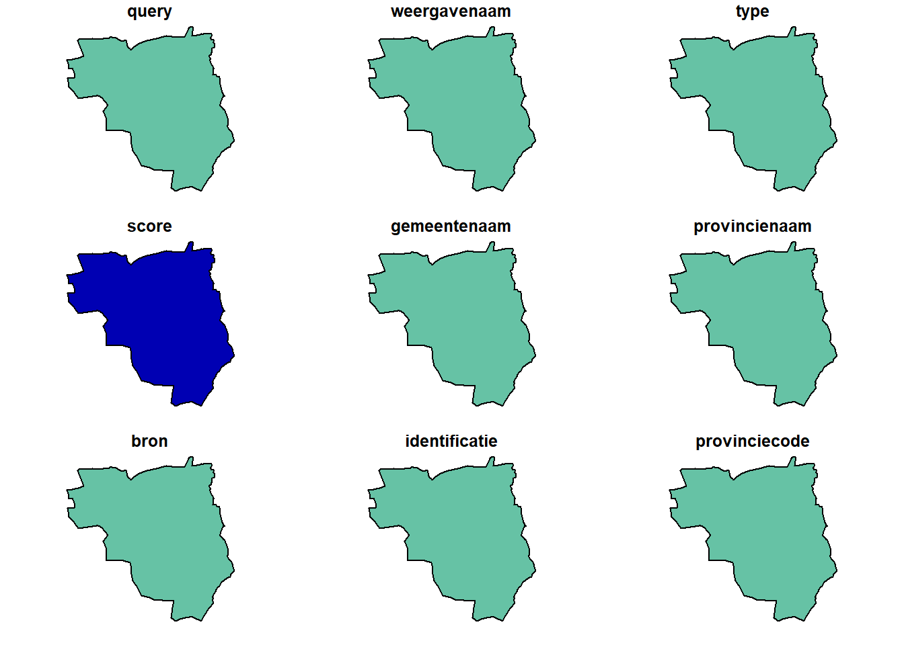
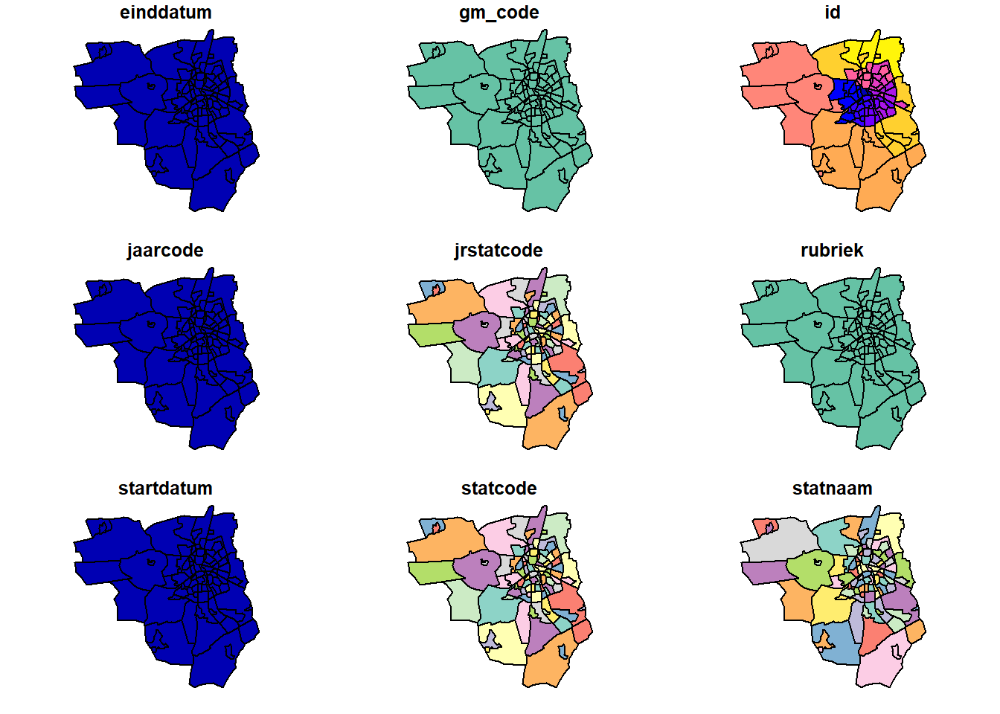
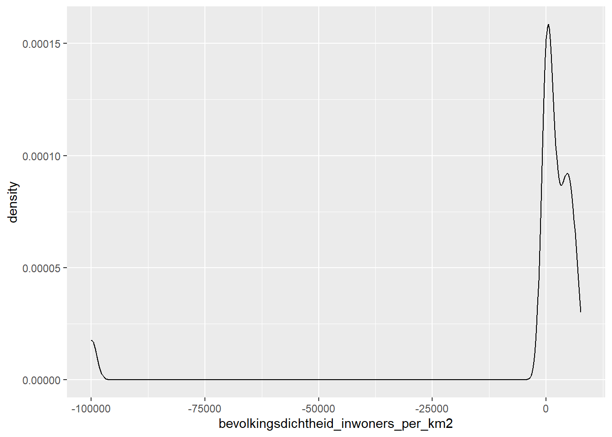
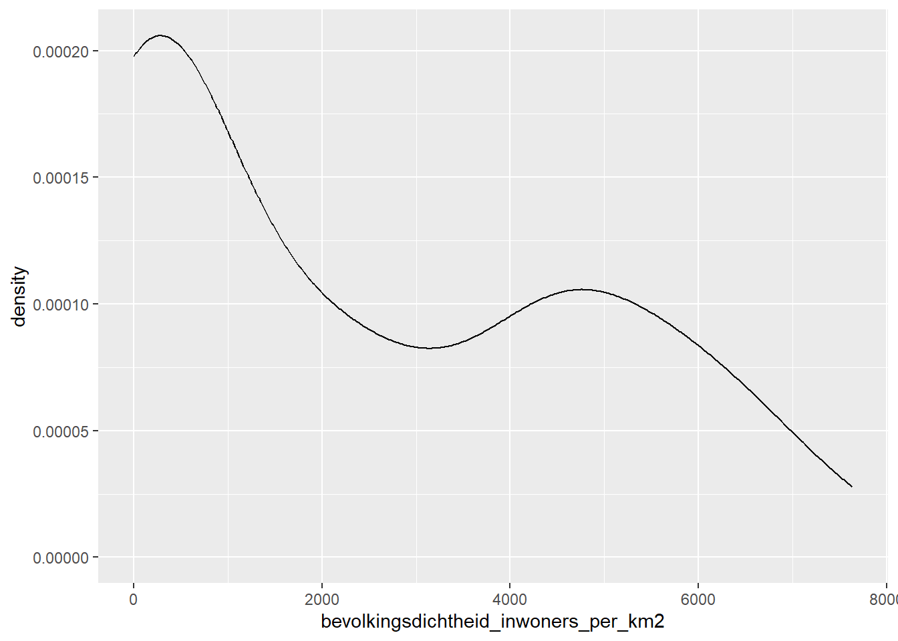
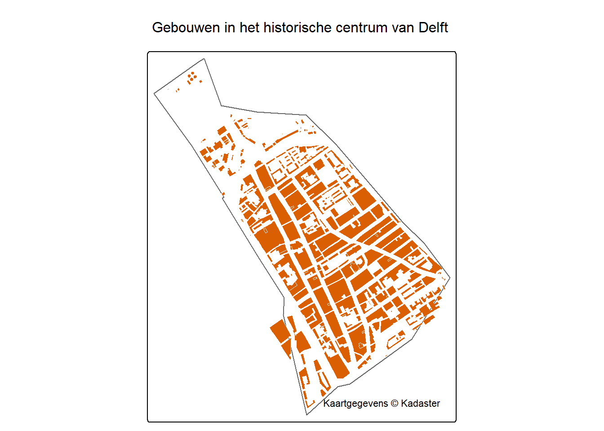
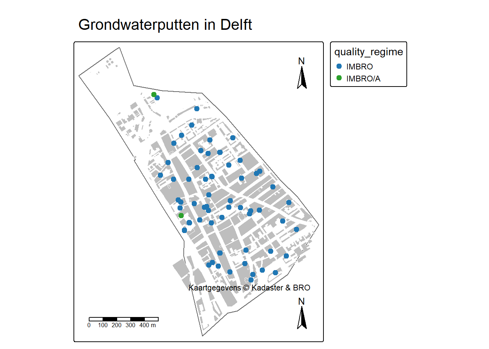
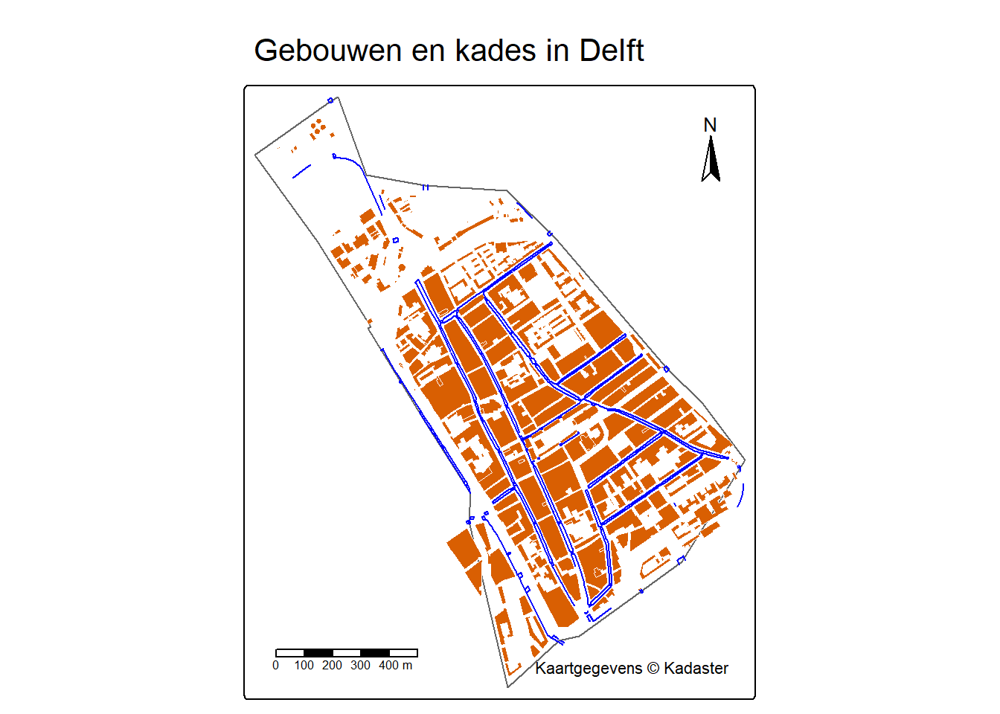

# load libraries
library(pdokr)
library(dplyr)
library(tmap)
library(sf)
library(ggplot2)
# force non scientific formatting of numbers
options(scipen = 999)
options(digits=3)4 Werkcollege 3: werken met ruimtelijke data
4.1 Inleiding
In de voorgaande werkcolleges hebben jullie gewerkt met grondwaterstanden uit verschillende bronnen en met gegevens over weer en klimaat. Deze week gaan we aan de slag met ruimtelijke data van PDOK en uit de BRO. We gaan er hierbij vanuit dat jullie de stof van de voorgaande weken hebben verwerkt. Daardoor zullen niet alle stappen worden uitgelegd. Na dit werkcollege heb je voldoende kennis en ervaring om zelf analyses uit te voeren op eigen datasets.
4.2 Project aanmaken
Maak een nieuw project aan voor dit werkcollege. Als je niet meer weet hoe dat moet, kijk dan even bij het eerste werkcollege.
Maak ook een nieuw script aan om in te werken en sla deze op in de projectmap. Zorg ook voor de standaardmappen data en export.
4.3 Bibliotheken
We laden weer een aantal benodigde bibliotheken. Daat zitten enkele nieuwe bij, die je dus moet installeren. We gebruiken in dit werkcollege:
pdokr (Eisma 2026): voor het vinden en inlezen van data vanuit PDOK, inclusief BRO
dplyr (Wickham et al. 2023): voor het bewerken van tabulaire data (
tibble)tmap (Tennekes 2018): voor het maken van kaarten
sf (Pebesma 2018; Pebesma et al., n.d.); voor het werken met ruimtelijke data
ggplot (Wickham 2016): voor het maken van grafieken
Als je grafieken moet maken, zorg dan dat je de juiste bibliotheken laadt! Je hebt er in de voorgaande lessen met een aantal leren werken
4.4 Een eerste kaart maken
Voor dit werkcollege maken we gebruik van de pdokr package van Coen Eisma en naar voorbeeld van zijn blog (https://www.coeneisma.nl/blog/pdokr-op-cran/) maken we een kaart.
Op zijn blog schrijft hij als uitleg:
PDOK (Publieke Dienstverlening Op de Kaart) is hét platform voor open geodata van de Nederlandse overheid: denk aan gemeente-, wijk- en buurtgrenzen van het CBS, gebouwen uit de BAG, topografie, luchtfoto’s en nog veel meer. Allemaal gratis en zonder API-key. Toch blijft deze waardevolle databron voor veel data-analisten en -scientists vaak onaangeboord: wie niet dagelijks met geodata werkt, haakt af op termen als OGC-services, WFS-URL’s en coördinaatstelsels. Dat is precies wat pdokr grotendeels wegneemt. Je zoekt een dataset (
pdok_search_datasets(),pdok_list_layers()), leest een laag in metpdok_read(), en filtert ondertussen makkelijk op specifiek gebied of jaar. En adressen omzetten naar coördinaten, gemeente en terug kan metpdok_geocode()enpdok_reverse_geocode(). Wanneer je met pdokr en dataset inlaadt krijg je een zogenoemd sf-object: gewoon een dataframe met een geometriekolom en een sf-class. Je kunt er dus gewoon mee werken zoals je gewend bent — zoals filteren, joinen en samenvatten met dplyr — én er ruimtelijke analyses op doen met de functies uit de sf-package zoals oppervlaktes of afstanden berekenen. Of je eigen data koppelen aan officiële geodata.” (Bron: https://www.coeneisma.nl/blog/pdokr-op-cran/)
We gaan nu een eenvoudige kaart maken van Apeldoorn. Daarom moeten we eerst weten waar deze stad ligt en gebruiken daarvoor pdok_geocode()
Apeldoorn_grens <- pdok_geocode("Apeldoorn", "gemeente")Op deze manier hebben we een simple-features (sf) object gemaakt. Dit is een ruimtelijke object met de grenzen van de gemeente Apeldoorn.
We zouden dit eenvoudig kunnen plotten met de standaard plot() functie.
plot(Apeldoorn_grens)Warning: plotting the first 9 out of 16 attributes; use max.plot = 16 to plot
all
Deze plot dan voor de eerste 10 kolommen de data en de geografische grenzen en dat is in dit geval weinig nuttig, omdat het slechts 1 polygoon is.
Daarom gaan we eerst wat meer data opvragen. We vragen nu de data op van het CBS met informatie over de buurten van Apeldoorn. Met de onderstaande code gebruiken we de functie pdok_read() om deze data op te vragen, waarbij we - De laag “buurt_gegeneraliseerd” opvragen uit “cbs/gebiedsindelingen”, - Deze data tot het jaar 2025 bepertken - Binnen de ruimtelijke gemeentegrenzen van Apeldoorn - En zorgen dat de gemeentecode gelijk is uit de laag met de grens van de gemeente
buurten <- pdok_read(
"cbs/gebiedsindelingen", "buurt_gegeneraliseerd",
datetime = 2025, filter_by = Apeldoorn_grens) |>
filter(gm_code == paste0("GM", Apeldoorn_grens$gemeentecode))Wanneer we nu de kaartlaag met de buurten van Apeldoorn plotten, zie je wel verschillen voor de verschillende kolommen in de tabel en dat de inhoud dus soms verschillend is en soms hetzelfde
plot(buurten)
Het is nu met wat code vrij eenvoudig om een kaart te maken met we verschillende buurten in Apeldoorn door gebruik te maken van tmap. In het onderstaande voorbeeld kleuren we de buurten op basis van het veld statnaam.
tmap_mode("view")ℹ tmap modes "plot" - "view"
ℹ toggle with `tmap::ttm()`tm_basemap(pdok_basemap("pastel")) +
tm_shape(buurten) +
tm_polygons(
fill = "MAP_COLORS",
fill.scale = tm_scale_categorical(
values = c("#0E6465", "#58BDBB", "#B65A38", "#E08A63")
),
fill_alpha = 0.5, col = "darkgreen", id = "statnaam",
fill.legend = tm_legend(show = TRUE)
) Dit is niet per se nuttig, maar laat wel zien wat je met deze relatief eenvoudige code kunt doen. Het is wel belangrijk om de syntax vast te begrijpen van tmap
tm_basemap(pdok_basemap("pastel")) zegt dat je een pastel-achtegrondkaart gebruikt dan komt er een + tm_shape(buurten) geeft aan dat je buurten gebruikt als kaartlaag, wat wordt gevolgd door het bijbehorende tm_polygons(...) waarmee je aangeeft hoe je deze laag wilt visualseren (kleuren, vormen, etc).
Het CBS biedt echter nog veel meer data aan over de bevolking in de wijken, waarmee je inzicht krijgt in meer statistische data over de omgeving, zoals bevolkingssamenstelling, Deze laag laden we nu even
buurten2025 <- pdok_read(
"cbs/wijken-en-buurten-2025", "buurten", filter_by = Apeldoorn_grens) |>
filter(gemeentenaam == "Apeldoorn")Het extra filter op gemeentenaam is nodig, omdat de ruimtelijke begrenzing met de gemeentegrens ook enkele polygonen van buurgemeentes selecteert.
Bekijk deze tabel eens even, om te zien welke data hierin zit.
Laten we eerst even een density-plot maken van de bevolkingsdichtheid. Dat is vergelijkbaar met een histogram.
buurten2025 |>
ggplot(aes(x=bevolkingsdichtheid_inwoners_per_km2)) + geom_density()
Hmm, deze data ziet er niet goed uit. Dat komt omdat de afwezigheid van data in deze dataset als een negatief getal wordt weergegeven. Dat is op te lossen door deze getallen met een NAte vervangen en daarna opnieuw de grafiek te maken. Op deze manier heb je de data opgeschoond en kun je duidelijke visualisaties maken:
buurten2025$bevolkingsdichtheid_inwoners_per_km2[buurten2025$bevolkingsdichtheid_inwoners_per_km2<0] <- NA
buurten2025 |>
ggplot(aes(x=bevolkingsdichtheid_inwoners_per_km2)) + geom_density()Warning: Removed 5 rows containing non-finite outside the scale range
(`stat_density()`).
We kunnen nu deze data ook in een kaart laten zien en dan zien we welke buurten dichter bevolkt zijn en welke minder. Deze gegevens helpen om een beeld te krijgen van een stad en ook te zien waar bepaalde ingrepen in de leefomgeving voor mensen verschillende invloeden kunnen hebben
tm_basemap(pdok_basemap("pastel")) +
tm_shape(buurten2025) +
tm_polygons(
fill = "bevolkingsdichtheid_inwoners_per_km2",
fill.scale = tm_scale_continuous(),
fill.legend = tm_legend(show = TRUE)
)4.4.1 Nu zelf nadenken
Let op negatieve getallen bij het maken van de onderstaande opdrachten.
- Maak een histogram voor deze bevolkingsdichtheid
- In welke wijk wonen de meeste ouderen?
- In welke wijk wonen de meeste kinderen?
- Maak een grafiek van de bevolkingsopbouw van een wijk naar keuze.
- Visualiseer in een kaart met de percentages van mensen tussen 25 en 45 jaar oud.
- Visualiseer in een kaart de verhouding tussen mannen en vrouwen in de verschillende buurten laat zien.
- Maak een staafdiagram waarin je voor twee verschillende buurten het aantal vrouwen en mannen met elkaar vergelijkt. Kies zelf de betreffende wijken.
4.5 Een kaart van Delft
Laten we eens een andere kaart maken, maar nu van de gemeente Delft. Daartoe moeten we eerst de gemeentegrenzen opvragen en daarna de grenzen van Delft bepalen.
gemeenten <- pdok_read(
"cbs/gebiedsindelingen", "gemeente_gegeneraliseerd", datetime = 2025
)
delft <- gemeenten[gemeenten$statnaam == "Delft", ]We gaan nu een kaart maken van het centrum van Delft en moeten dus weten welke wijken er in Delft zijn, om daarna het centrum te selecteren
wijken_delft <- pdok_read(
"cbs/gebiedsindelingen", "wijk_gegeneraliseerd", datetime = 2025,
filter_by = delft, predicate = "within"
)
binnenstad_delft <- wijken_delft[wijken_delft$statnaam == "Wijk 11 Binnenstad", ]We hebben nu een ruimtelijk object met daarin de grenzen van de binnenstad van Delft en om een kaart te maken hebben we meer data nodig en daarom zoeken we de topografische data van alle gebouwen op en slaan dit op als een apart object. Dit betreft de topografische kaart (1:10.000)
gebouwen_delft <- pdok_read("kadaster/brt-top10nl", "gebouw_vlak", filter_by = binnenstad_delft)We gaan nu een kaartje maken van de data die we verzameld hebben. Dat kan met de onderstaande code. - We gebruiken een grijze achtergrondkaart - De laag met de omtrek van de binnenstad voegen we daarna toe in de kleur grijs - De laag met gebouwen voegen we daarna toe, waarbij we de rand wit maken en de kleur (col) een soort oranje - We geven de kaart ook een titel - Tot slot nog een bronvermelding met betrekking tot de data. Dat is nu vrij kort, maar moet bij echt gebruik netter zijn, want het moet duidelijk zijn waar de data te vinden is. Dat kan ook vaak in het bijschrift. Voor meer informatie over de Topografische Kaart: https://www.pdok.nl/introductie/-/article/basisregistratie-topografie-brt-topnl
# Map it
tmap_mode("plot")ℹ tmap modes "plot" - "view"tm_basemap(pdok_basemap("grijs")) +
tm_shape(binnenstad_delft) +
tm_borders(col = "grey40") +
tm_shape(gebouwen_delft) +
tm_polygons(fill = "#d95f02", col = "white", lwd = 0.4) +
tm_title("Gebouwen in het historische centrum van Delft") +
tm_credits("Kaartgegevens © Kadaster")[basemaps] Tiles from "id_1",
"https://service.pdok.nl/brt/achtergrondkaart/wmts/v2_0/grijs/EPSG:3857/{z}/{x}/{y}.png",
"c(\"a\", \"b\", \"c\")", and "" at zoom level 15 couldn't be loaded
[plot mode] fit legend/component: Some legend items or map compoments do not
fit well, and are therefore rescaled.
ℹ Set the tmap option `component.autoscale = FALSE` to disable rescaling.
This message is displayed once per session.
4.6 Grondwaterpunten in Delft op de kaart
We hebben nu een aantal datasets gebruikt, maar gaan nu zelf op zoek naar data om daarmee te werken.
TipDatasets vinden
Je kunt zelf met de volgende functies zoeken naar datasets en/of layers:
pdok_search_datasets("datasetnaam")zoeken naar datasets in PDOK.pdok_search_layers("kadaster/brt-top10nl")gebruik je om lagen in een dataset te zoeken. In het voorbeeld zoek je naar lagen in de datasetkadaster/brt-top10nl
Uiteraard kun je de resultaten opslaan in een aparte data.frame of tibble, zodat je makkelijker kunt zoeken dan in de console.
We hebben in het vorige college gebruik gemaakt van grondwaterstanden. Die staan ook in de BRO en kun je ook via PDOK vinden. Met de onderstaande code vinden we datasets over grondwater
pdok_search_datasets("grondwater")# A tibble: 1 × 7
id name description keywords services owner ogc_url
<chr> <chr> <chr> <list> <chr> <chr> <chr>
1 tno/bro-grondwatermonitorin… BRO … Deze datas… <chr> ogc tno https:…Dat levert echter heel veel data op. De kolom met id is belangrijk voor de naam. We kunnen meteen in de vraag deze kolom opvragen door de onderstaande code
pdok_search_datasets("grondwater")$id[1] "tno/bro-grondwatermonitoring-in-samenhang-karakteristieken"We weten nu dat het gaat om de dataset: “tno/bro-grondwatermonitoring-in-samenhang-karakteristieken”. We kunnen met de functie ’pdok_list_layers()` een overzicht krijgen van alle lagen
pdok_list_layers("tno/bro-grondwatermonitoring-in-samenhang-karakteristieken")# A tibble: 7 × 9
dataset layer title description start_date end_date crs storage_crs bbox
<chr> <chr> <chr> <chr> <date> <date> <list> <int> <list>
1 tno/bro… gm_g… Gron… De locatie… NA NA <int> 4258 <dbl>
2 tno/bro… gm_g… GMW … De meest k… NA NA <int> 4258 <dbl>
3 tno/bro… gm_g… Gron… De meest k… NA NA <int> 4258 <dbl>
4 tno/bro… gm_g… GMN … De meest k… NA NA <int> 4258 <dbl>
5 tno/bro… gm_g… GM -… In de gege… NA NA <int> 4258 <dbl>
6 tno/bro… gm_g… Gron… De meest k… NA NA <int> 4258 <dbl>
7 tno/bro… gm_g… Gron… De meest k… NA NA <int> NA <dbl> Dat lebvert een uitgebreide tabel op met veel informatie over de verschillende lagen
pdok_list_layers("tno/bro-grondwatermonitoring-in-samenhang-karakteristieken")# A tibble: 7 × 9
dataset layer title description start_date end_date crs storage_crs bbox
<chr> <chr> <chr> <chr> <date> <date> <list> <int> <list>
1 tno/bro… gm_g… Gron… De locatie… NA NA <int> 4258 <dbl>
2 tno/bro… gm_g… GMW … De meest k… NA NA <int> 4258 <dbl>
3 tno/bro… gm_g… Gron… De meest k… NA NA <int> 4258 <dbl>
4 tno/bro… gm_g… GMN … De meest k… NA NA <int> 4258 <dbl>
5 tno/bro… gm_g… GM -… In de gege… NA NA <int> 4258 <dbl>
6 tno/bro… gm_g… Gron… De meest k… NA NA <int> 4258 <dbl>
7 tno/bro… gm_g… Gron… De meest k… NA NA <int> NA <dbl> Een van de handige dingen van R is dat je ook functies kunt combineren en daarmee het aantal regels verminderen. Daarnaast schrijven we nu de resultaten weg in gw_lagen, wat ons de mogelijkheid geeft om meer informatie te lezen over de lagen:
gw_lagen <- pdok_list_layers(pdok_search_datasets("grondwater")$id)De inhoud van deze tabel staat hieronder
| dataset | layer | title | description | start_date | end_date | crs | storage_crs | bbox |
|---|---|---|---|---|---|---|---|---|
| tno/bro-grondwatermonitoring-in-samenhang-karakteristieken | gm_gmw | Grondwatermonitoringput (GMW) | De locatie en meest karakteristieke (ken)gegevens van nederlandse grondwatermonitoringputten (GMW) uit de Basisregistratie Ondergrond (BRO). Een grondwatermonitoringput is een werk dat in een geboord gat is gerealiseerd om gedurende langere tijd veranderingen in het grondwater in een specifiek deel van de ondergrond te kunnen registreren. Gewoonlijk bestaat een put uit 1 of meerdere monitoringsbuizen die aan het oppervlak door een constructie worden beschermd. De GMW gegevenscatalogus is opgenomen op de BRO Productomgeving. Hier vindt men ook de gegevensdefinitie, met daarin onder andere een omschrijving van alle entiteiten en attributen. | NA | NA | 4326, 28992, 3857, 4258 | 4258 | -1.66, 48.04, 12.43, 56.11 |
| tno/bro-grondwatermonitoring-in-samenhang-karakteristieken | gm_gmw_monitoringtube | GMW - Monitoringbuis | De meest karakteristieke (ken)gegevens van de monitoringbuizen van nederlandse grondwatermonitoringputten (GMW) uit de Basisregistratie Ondergrond (BRO). Bij een put met meerdere monitoringbuizen worden de gegevens per monitoringbuis weergegeven. De GMW gegevenscatalogus is opgenomen op de BRO Productomgeving. Hier vindt men ook de gegevensdefinitie, met daarin onder andere een omschrijving van alle entiteiten en attributen. | NA | NA | 4326, 28992, 3857, 4258 | 4258 | -1.66, 48.04, 12.43, 56.11 |
| tno/bro-grondwatermonitoring-in-samenhang-karakteristieken | gm_gmn | Grondwatermonitoringnet (GMN) | De meest karakteristieke (ken)gegevens van nederlandse grondwatermonitoringnetten (GMN) uit de Basisregistratie Ondergrond (BRO). Een grondwatermonitoringnet is een verzameling meetpunten (gevormd door monitoringbuizen van grondwatermonitoringputten (GMW)), waarin onderzoek wordt gedaan om de toestand van het grondwater te kunnen bepalen en veranderingen erin te kunnen monitoren. De GMN gegevenscatalogus is opgenomen op de BRO Productomgeving. Hier vindt men ook de gegevensdefinitie, met daarin onder andere een omschrijving van alle entiteiten en attributen. | NA | NA | 4326, 28992, 3857, 4258 | 4258 | -1.66, 48.04, 12.43, 56.11 |
| tno/bro-grondwatermonitoring-in-samenhang-karakteristieken | gm_gmn_measuringpoint | GMN - Meetpunt | De meest karakteristieke (ken)gegevens van afzonderlijke meetpunten van nederlandse grondwatermonitoringnetten (GMN) uit de Basisregistratie Ondergrond (BRO). Een meetpunt wordt gevormd door één monitoringbuis van een grondwatermonitoringput (GMW) waarin onderzoek wordt gedaan om de toestand van het grondwater te kunnen bepalen en veranderingen erin te kunnen monitoren. De GMN gegevenscatalogus is opgenomen op de BRO Productomgeving. Hier vindt men ook de gegevensdefinitie, met daarin onder andere een omschrijving van alle entiteiten en attributen. | NA | NA | 4326, 28992, 3857, 4258 | 4258 | -1.66, 48.04, 12.43, 56.11 |
| tno/bro-grondwatermonitoring-in-samenhang-karakteristieken | gm_gmn_reference | GM - Verwijzing naar GMN | In de gegevensdefinitie van de registratieobjecten grondwaterstandonderzoek (GLD), grondwatersamenstellingsonderzoek (GAR) en formatieweerstand onderzoek (FRD) is een verwijzing opgenomen naar een grondwatermonitoringnet (GMN). In deze tabel/laag is deze verwijzing vastgelegd. | NA | NA | 4326, 28992, 3857, 4258 | 4258 | -1.66, 48.04, 12.43, 56.11 |
| tno/bro-grondwatermonitoring-in-samenhang-karakteristieken | gm_gld | Grondwaterstandonderzoek (GLD) | De meest karakteristieke (ken)gegevens van grondwaterstandonderzoeken (GLD) uit de Basisregistratie Ondergrond (BRO), gemeten in meetpunten van nederlandse grondwatermonitoringnetten (GMN). Een meetpunt vertegenwoordigt één monitoringbuis van een grondwatermonitoringput (GMW). De GLD gegevenscatalogus is opgenomen op de BRO Productomgeving. Hier vindt men ook de gegevensdefinitie, met daarin onder andere een omschrijving van alle entiteiten en attributen. | NA | NA | 4326, 28992, 3857, 4258 | 4258 | -1.66, 48.04, 12.43, 56.11 |
| tno/bro-grondwatermonitoring-in-samenhang-karakteristieken | gm_gar | Grondwatersamenstellingsonderzoek (GAR) | De meest karakteristieke (ken)gegevens van grondwatersamenstellingsonderzoeken (GAR) uit de Basisregistratie Ondergrond (BRO), gemeten in meetpunten van nederlandse grondwatermonitoringnetten (GMN). Een meetpunt vertegenwoordigt één monitoringbuis van een grondwatermonitoringput (GMW). De GAR gegevenscatalogus is opgenomen op de BRO Productomgeving. Hier vindt men ook de gegevensdefinitie, met daarin onder andere een omschrijving van alle entiteiten en attributen. | NA | NA | 4326, 28992, 3857, 4258 | NA | -1.66, 48.04, 12.43, 56.11 |
Zoals je ziet is er veel data beschikbaar over grondwater, zoals de kwaliteit en de grondwaterstanden. Wil je meer weten over de data is dit gedocumenteerd op https://www.bro-productomgeving.nl/bpo/latest/grondwatermonitoring. Wij gaan nu werken met de grondwaterstanden (https://www.bro-productomgeving.nl/bpo/latest/grondwatermonitoring/grondwaterstandonderzoek-gld). Deze laag heet: gm_gld.
Een snel overzicht van de namen van de lagen vind je met de onderstaande code
pdok_list_layers(pdok_search_datasets("grondwater")$id)$layer[1] "gm_gmw" "gm_gmw_monitoringtube" "gm_gmn"
[4] "gm_gmn_measuringpoint" "gm_gmn_reference" "gm_gld"
[7] "gm_gar" Stel dat we nu alle grondwaterstanden binnen de binnenstad van delft willen hebben, kunnen we dat eenvoudig opvragen door deze data uit PDOK te halen met de onderstaande, waarbij we filteren op basis van het gebied van de binnenstad van Delft.
gw_stand_delft <- pdok_read("tno/bro-grondwatermonitoring-in-samenhang-karakteristieken",
"gm_gld", filter_by = binnenstad_delft)Dit kunnen we nu eenvoudig op de kaart laten zien door de onderstaande code, waarbij we alle grondwaterputten in Delft laten zien en een kleur geven op basis van de
tmap_mode("plot")ℹ tmap modes "plot" - "view"tm_basemap(pdok_basemap("grijs")) +
tm_shape(binnenstad_delft) +
tm_borders(col = "grey40") +
tm_shape(gebouwen_delft) +
tm_polygons(fill = "grey", col = "white", lwd = 0.4) +
tm_shape(gw_stand_delft) +
tm_dots(size = 0.5, fill = "quality_regime", fill.scale = tm_scale_categorical()) +
tm_compass(position = c("top", "right")) +
tm_scalebar(position = c("bottom", "left")) +
tm_title("Grondwaterputten in Delft") +
tm_credits("Kaartgegevens © Kadaster & BRO") +
tm_compass()
4.6.1 Nu zelf aan de slag
- Maak een kaart waarbij je de punten van de grondwaterstandmetingen kleurt op basis van de datum van het begin van met metingen.
- Maak een kaart waarbij je de punten van de grondwaterstandmetingen kleurt op basis van de datum van het aantal metingen.
- Maak een kaart waarbij je de punten van de grondwaterstandmetingen kleurt op basis van de duur van de metingen
4.7 Individuele meetreeksen downloaden
In de dataset gw_stand_delft bestaat een aantal kolommen met daarin een link naar een csv-bestand: - series_unknown_csv_url - series_preliminary_csv_url - series_fully_assessed_csv_url
Deze kolommen bevatten een aantal links. Als we de links willen zien, kunnen we bijvoorbeeld de eerste rij selecteren en dan kolommen 17,18 en 19 met gw_stand_delft[1,17:19]. Dat is basis-R. Je kunt ook met dplyr uit de tidy verse de namen van de kolommen selecteren met gw_stand_delft[1,] |> select(series_unknown_csv_url, series_preliminary_csv_url, series_unknown_csv_url)
gw_stand_delft[1,17:19]Simple feature collection with 1 feature and 3 fields
Geometry type: POINT
Dimension: XY
Bounding box: xmin: 4.35 ymin: 52 xmax: 4.35 ymax: 52
Geodetic CRS: WGS 84
# A tibble: 1 × 4
series_unknown_csv_url series_preliminary_c…¹ series_fully_assesse…²
<chr> <chr> <chr>
1 https://publiek.broservices.nl/… https://publiek.brose… https://publiek.brose…
# ℹ abbreviated names: ¹series_preliminary_csv_url,
# ²series_fully_assessed_csv_url
# ℹ 1 more variable: geometry <POINT [°]>gw_stand_delft[1,] |>
select(series_unknown_csv_url, series_preliminary_csv_url, series_unknown_csv_url)Simple feature collection with 1 feature and 2 fields
Geometry type: POINT
Dimension: XY
Bounding box: xmin: 4.35 ymin: 52 xmax: 4.35 ymax: 52
Geodetic CRS: WGS 84
# A tibble: 1 × 3
series_unknown_csv_url series_preliminary_c…¹ geometry
<chr> <chr> <POINT [°]>
1 https://publiek.broservices.… https://publiek.brose… (4.35 52)
# ℹ abbreviated name: ¹series_preliminary_csv_urlJe zou dus nu voor iedere rij de individuele dataset op kunnen vragen en kunnen downloaden, maar dat is wat veel werk. Daarom is het handig om de dataset automatisch te doorlopen. De meest eenvoudige manier is een for loop. Er zijn ook andere manieren, maar voor de eenvoud blijven we bij een for loop (wil je ook andere opties zien, ga dan naar: https://r4ds.had.co.nz/iteration.html).
De onderstaande code leest deze data in. Lees de annotatie om de code te begrijpen
# loop voor het doorlopen van alle links met csv-bestanden met grondwatermeting
for (i in 1:nrow(gw_stand_delft)) {
# inlezen van de data van de link uit rij i
gw_meting <- read.csv(gw_stand_delft$series_fully_assessed_csv_url[i])
# maak veldnamen aan
colnames(gw_meting) <- c("datum_tijd", "waterstand", " StatusKwaliteitscontrole", "test4", "test5", "Interpolatietype")
# voeg een veld met het BRO-id toe
gw_meting$bro_id <- gw_stand_delft$bro_id[i]
# de ingelezen data is in de eerste ronde de output
if (i==1) {
gw_metingen_delft <- gw_meting
} else {
# in de volgende rondes worden de metingen samengevoegd met rbind (row-bind: combineren rijen )
gw_metingen_delft <- rbind(gw_metingen_delft,gw_meting)
}
} Deze code loopt helaas vast op een foutmelding, omdat sommige data niet gevonden kan worden. Daarom gaan de we try-functie gebruiken, om zo foutmeldingen te kunnen verwerken. Lees vooral de annotatie in de onderstaande code
# verdwijder eventueel bestaande metingen
if (exists("gw_metingen_delft")) {
rm(gw_metingen_delft)
}
# loop voor het doorlopen van alle links met csv-bestanden met grondwatermeting
for (i in 1:nrow(gw_stand_delft)) {
# probeer de data te downloaden'
check_data <- try(read.csv(gw_stand_delft$series_fully_assessed_csv_url[i]))
# bij een foutmelding, proberen de we volgende regel.
if (class(check_data)=="try-error") {
print(paste0("De dataset met BRO-id ", gw_stand_delft$bro_id[i], " mist de onderliggende data"))
next
} else {
# indien er wel een bestand gevonden wordt, kunnen we die inlezen
gw_meting <- read.csv(gw_stand_delft$series_fully_assessed_csv_url[i])
# maak veldnamen aan
colnames(gw_meting) <- c("datum_tijd", "waterstand", " StatusKwaliteitscontrole", "test4", "test5", "Interpolatietype")
# voeg een veld met het BRO-id toe
gw_meting$bro_id <- gw_stand_delft$bro_id[i]
# test of er al een samengestelde lijst met metingen bestaat, zo niet, maak deze aan
if (!exists("gw_metingen_delft")) {
gw_metingen_delft <- gw_meting
} else {
# anders samenvoegen
gw_metingen_delft <- rbind(gw_metingen_delft,gw_meting)
}
}
}Als het goed is, is het nu gelukt om de data in te lezen en heeft dit een aardig groot object opgeleverd met meer dan 7 miljoen (!) metingen. Belangrijk om te onthouden - Loops zijn bepaalde stappen herhaaldelijk uit te kunnen voeren - Je kunt testen of objecten bestaan in jouw workspace - Data downloaden en samenvoegen is te automatiseren en dat spaart tijd.
Het is wel fijn om nog even vast te leggen welke metingen beschikbaar zijn en welke niet. Dat kan door een nieuw veld toe te voegen met de naam status_meting
gw_stand_delft$status_meting[gw_stand_delft$bro_id %in% unique(gw_metingen_delft$bro_id)] <- "aanwezig"
gw_stand_delft$status_meting[is.na(gw_stand_delft$status_meting)] <- "afwezig"Nu we veel data gedownload hebben en dat tijd gekost heeft, is het fijn om deze data lokaal op te slaan. Dat kan met de functie saveRDS(). Wil je meer weten over dit formaat, kijk dan even hier https://www.geeksforgeeks.org/r-language/data-serialization-rds-using-r/.
# opslaan data als RDS
saveRDS(gw_metingen_delft, "data/gw_metingen_delft.rds")Dit maakt het mogelijk om aangemaakte data later weer in te lezen met:
# inlezen rds-bestand
gw_metingen_delft <- readRDS("data/gw_metingen_delft.rds")4.7.1 Nu even zelf
Check bij het werken met datum-velden of dit tekst of datum-velden zijn. Pas ze indien nodig aan (zie voorgaande colleges).
- Maak een kaart waarop zichtbaar is welke metingen beschikbaar zijn en welke niet. Denk eraan dat een kaart altijd is voorzien van een noorpijl, schaalbalk en legenda.
- Maak een kaart met de grondwaterstanden op 24 juni 2024 in Delft.
- Maak een spreidingsdiagram van de grondwater op deze datum.
- Maak een boxplot van de grondwaterstanden in juli 2021.
- Maak een boxplot van de grondwaterstanden in januari 2021. Wat valt op?
- Maak een kaart met de gemiddelde grondwaterstanden in mei 2023.
Je zou op basis van deze data ook volgende stappen kunnen gaat zetten ten aanzien van interpolatie. Dat gaan we nu niet behandelen.
4.8 Kades in Delft selecteren
Nu we de ruimtelijke data in R hebben ingelezen wordt het ook mogelijk om ruimtelijke vragen aan de data te stellen
Laten we eerst nog eens kijken welke lagen bestaan in de top10NL
pdok_list_layers("kadaster/brt-top10nl")$layer [1] "functioneel_gebied_multivlak" "functioneel_gebied_punt"
[3] "functioneel_gebied_vlak" "gebouw_punt"
[5] "gebouw_vlak" "geografisch_gebied_punt"
[7] "geografisch_gebied_multivlak" "geografisch_gebied_vlak"
[9] "hoogte_lijn" "hoogte_punt"
[11] "inrichtingselement_lijn" "inrichtingselement_punt"
[13] "plaats_multivlak" "plaats_punt"
[15] "plaats_vlak" "plantopografie_vlak"
[17] "registratief_gebied_multivlak" "registratief_gebied_vlak"
[19] "relief_lijn" "relief_talud_hoge_zijde_lijn"
[21] "relief_talud_lage_zijde_lijn" "spoorbaandeel_lijn"
[23] "spoorbaandeel_punt" "terrein_vlak"
[25] "waterdeel_lijn" "waterdeel_punt"
[27] "waterdeel_vlak" "wegdeel_hartlijn"
[29] "wegdeel_hartpunt" "wegdeel_lijn"
[31] "wegdeel_punt" "wegdeel_vlak" Er bestaan verschillende lagen, waarbij punten, lijnen en vlakken (polygonen) gescheiden zijn. Het is maar net wat je nodig hebt.
We gaan nu een aantal lagen aanmaken met ruimtelijke informatie in Delft, waarbij we beginnen met de wegen en wateren om zo de kades te kunnen vinden die aan wegen grenzen. Hiertoe hebben we polygonen nodig. We hebben net gezien dat er een laag waterdeel_vlak en een wegdeel_vlak bestaat:
water_delft <- pdok_read("kadaster/brt-top10nl", "waterdeel_vlak", filter_by = binnenstad_delft)
weg_delft <- pdok_read("kadaster/brt-top10nl", "wegdeel_vlak", filter_by = binnenstad_delft)⠙ Downloading PDOK features: 1135 fetchedOm nu te weten te komen waar wegen aan water grenst, maken we gebruik van de intersectie van deze twee lagen. We maken daarbij gebruik van de topologische relaties tussen objecten (zie ook https://r.geocompx.org/spatial-operations#topological-relations voor meer uitleg).
Het resultaat zal een lijn zijn, dus we moeten eerst onze polygonen omzetten naar lijnen, zodat de output ook een lijn zal zijn.
# zet de vlakgrenzen om naar een lijn
watergrenzen_delft <- st_cast(st_boundary(water_delft), "MULTILINESTRING")
weggrenzen_delft <- st_cast(st_boundary(weg_delft), "MULTILINESTRING")
# bepaal de intersectie van weg en water en sla dit op als een object
wegkade_delft <- st_intersection(watergrenzen_delft, weggrenzen_delft)Warning: attribute variables are assumed to be spatially constant throughout
all geometriesDeze kades kunnen we nu op de kaart zetten, zie onderstaand:
tmap_mode("plot")ℹ tmap modes "plot" - "view"tm_basemap(pdok_basemap("grijs")) +
tm_shape(binnenstad_delft) +
tm_borders(col = "grey40") +
tm_shape(gebouwen_delft) +
tm_polygons(fill = "#d95f02", col = "white", lwd = 0.4) +
tm_shape(wegkade_delft) +
tm_lines(col = "blue") +
tm_title("Gebouwen en kades in Delft") +
tm_credits("Kaartgegevens © Kadaster") +
tm_compass(position = c("top", "right")) +
tm_scalebar(position = c("bottom", "left"))
4.8.1 Nu zelf aan de slag
- Bepaal de totale lengte van de kades langs wegen in Delft. Je kunt hiervoor gebruik maken van
st_length(). Dit geeft alvast een indicatie ten aanzien van mogelijk onderhoud in deze stad. - Als het goed is, heb je gezien dat nog niet alle kades zijn gevonden. Dat komt omdat er ook gebouwen grenzen aan water. Bepaal ook deze kades.
- Welke kades missen nog? Zoek de juiste lagen op in PDOK om dit te bepalen.
- Het openbaar vervoer is ook in PDOK te vinden. Welke busroutes lopen door de stad? Kun je die ook op de kaart zetten?
- De hoogte van de kades is nu niet bekend, maar het zou mogelijk moeten zijn om deze te kunnen achterhalen op basis van open data. Hoe zou je dat aanpakken? Kun je dat ook in R?
4.9 Tot slot
Je hebt in deze les geleerd om
data uit PDOK te zoeken
lagen uit PDOK in R in te laden
met loops te werken
ruimtelijke bewerkingen uit te voeren
een start te maken met ruimtelijke analyses.